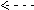

Glass of water
Can water have a 'memory' of its previous solutes, environment, or processing?
 Does water have memory?
Does water have memory?
 Is water special?
Is water special?
 Does the glassware matter?
Does the glassware matter?
 Is gas important?
Is gas important?
 Does dilution happen as predicted?
Does dilution happen as predicted?
 Solutions are more complex than expected
Solutions are more complex than expected
 Peroxide and radical production in water
Peroxide and radical production in water
 Possible scenarios for the memory effect in homeopathic solutions
Possible scenarios for the memory effect in homeopathic solutions
"Do not block the way of inquiry" Charles Sanders Peirce, 1899
"Maybe I should have thrown the data away" Jacques Benveniste, 1935-2004
but being a serious scientist and believing in his data, he could not
All systems may retain a memory of their previous treatment, whether this is due to the formation of stable contamination or the production of energetic heterogeneities. It has been shown that the physical properties not only depend on the initial temperature but also on kurtosis [3112]; the distribution of the particles' kinetic energies from the mean value, a property that may depend on its history. It should not be surprising that water also may retain a memory of its history.
Jaques Benveniste, 1935-2004
The ‘memory of water’ is a popular phrase that is mainly associated with homeopathy and the charismatic Jacques Benveniste (see left) [1211] following his and others’ allergy research work [132]. Benveniste was a leading French immunologist who headed a large INSERM laboratory directed at immunology, allergy, and inflammation research. j He reported that when white blood cells with a particular substance on their surfaces are exposed to a particular antibody, they release histamine in a manner that can be visibly monitored using a microscope. This work generated a controversial but 'in good faith' paper reviewed and published by Nature [132] after referees could find no flaws with the experimental procedure, and they had held up publication for two years while awaiting independent confirmation from impartial laboratories in Israel, Italy, and Canada. These research teams reported that even if the amount of that antibody was subjected to sequential physical processing and was apparently diluted many billions of times until there was essentially none left, it still had an observable biological effect different from those apparent using just the water employed for the dilutions (the 'memory of water' [1112]) a. The subject has drawn much controversy, with many 'scientists' simply rejecting it outright without studying the evidence. Also, it has not been more generally accepted after Nature reported the results as not reproducible by Nature's self-acknowledged biased observers (the Editor of Nature, a magician (!) and a malpractice investigator, none of whom had any relevant scientific experience). k and under oppressive, overly-demanding (with over twice the previous weekly load of tests) and unsympathetic conditions, in a limited and rushed 5-day trial (of five years and five laboratories work) using poorly responsive basophils, and with negative results from only the one laboratory being cherry-picked from amongst otherwise positive results [133]. The original results [132] were, however, confirmed in a blinded study by the statistician Alfred Spira [346e] and also in a rather bizarre Nature paper purporting to prove the opposite [346b], i They were subsequently comprehensively confirmed by a blinded multi-center trial [346a], and new results confirm similar phenomena [1585]. Despite this apparent confirmation by these several laboratories, there are still doubts (expressed by some) over whether the experiments are genuinely reproducible and whether the noted effects may be due to the origin of the biological samples or human operator effects [1362]. Further support for an effect has been found using NMR [1552]. It is important to note that even if Benveniste's experiments were simply false positives, no conclusions could be drawn over the efficacy of homeopathy. Many negligent critics of homeopathy have ignored this logic.
The 'Memory of water' area was the subject of several peer-reviewed papers in the journal Homeopathy (July 2007), c and the field has been over-viewed [1206]. Although there is much support for water showing properties that depend on its prior processing (that is, water having a memory effect), the experimental evidence indicates that such changes are due primarily to solute and surface changes occurring during this processing. The empirical evidence for specific changes in the physicochemical properties of homeopathic preparations has been reviewed, concluding that there is evidence for specific physicochemical changes in the homeopathic preparations [3711]. Indeed, simply stirring a solution may have pronounced effects on the vessel's surface charge and chemistry, which can last for several minutes after the stirring has ceased [2138]. Another memory scenario concerns individual O:H–O hydrogen bond possessing memory of their physical temperature and pressure history that lasts minutes [2227]. This hypothesis, although well-published in peer-reviewed journals, needs further substantiation. There is evidence from (blinded) NMR of a clear memory effect upon dilution/potentization of different substances (water, lactose, copper, gelsemium) as determined by 1 H spin-lattice T1 and spin-spin T2 relaxation time and average H/H distances [3055]. The experimentally corroborated memory phenomena cannot be taken as supporting the basic tenets of homeopathy, although they can explain some effects [1206]. [Back to Top  ]
]
The primary evidence against water having a memory is the very short (≈ ps) lifetime of hydrogen bonds between the water molecules [1209]. Indeed, in the absence of other materials or surfaces (see later), the specific hydrogen bonding pattern surrounding a solute does not persist when the solute is removed any more than would a cluster around any specified water molecule, or else water would not know which of its myriad past solutes took preference. Indeed the atoms that make up the water molecule only remain together for about a millisecond in liquid water due to proton exchange (see water dissociation). An NMR study shows no stable (>1 ms, >5 μM) water clusters are found in homeopathic preparations [712]. It should, however, be noted that the lifetime of hydrogen bonds does not control the lifetime of clusters in the same way that a sea wave may cross an ocean, remaining as a wave and with dependence on its history, but with its molecular content continuously changing. a Also, the equilibrium concentrations of any clusters are governed by thermodynamics, not kinetics.
Microwave irradiation gives rise to a memory effect on the surface tension of water that lasts for minutes after the effect of temperature rise alone has ended [2208]. An extraordinary paper authored by Nobel prize-winning Luc Montagnier has described memory effects in aqueous DNA solutions that the authors propose depend on interactions with the background electromagnetic field. These effects, if confirmed, require the prior processing and dilution of the solutions and are explained by Montagnier as resonance phenomena with nanostructures derived from the DNA and water [1602]. e
As applied to homeopathy, the 'memory of water' concept should also be extended to the memory of aqueous ethanol preparations, which are also used. The addition of ethanol to water adds an further critical area of complexity. Ethanol forms solutions in water that are far from ideal and very slow to equilibrate [1212]. Although usually considered a single phase, such solutions may contain several distinct phases [1297], and more generally consist of a complex mixture dominated by water-water and ethanol-ethanol clusters, where hydrogen-bonding is longer-lived than in water alone [1213]. They also favor nanobubble (that is, nanocavity) formation [1172]. Thus, the peculiar behavior of aqueous solutions (as mostly discussed on this page) is accentuated by the presence of ethanol. [Back to Top  ]
]
The process of silica dissolution has been much studied [1109, 1207, 2018] (ultrapure water can pick up 0.2 ppb Na+ ion from glassware in just one day), ever since it was proven by Lavoisier about 250 years ago, and fits with this argument. This may explain why glass is preferred over
polypropylene tubes in homeopathic preparations. It should be noted that dissolved silica
is capable of forming solid particles with complementary structures
(that is, imprints) to dissolved solutes and macromolecules,
and such particles will 'remember' these complementary structures
essentially forever. Such chemistry is expected to be preferred at aqueous-air interfaces due to the simultaneous reduction in charge density. It is worth noting that contact with water may change glass surfaces irreversibly [1882], clearly a 'memory' effect. [Back to Top  ]
]
Water does store and transmit information
concerning solutes through its hydrogen-bonded network.
Changes to this clustering network brought about by solutes
may take some time to re-equilibrate. Agitation (succussion) may also affect the hydrogen-bonded network (shear encouraging
destructuring). The gaseous solutes (with critical effect
on structuring [294]
and possible significant production of structuring nanobubbles (nanocavities) [993, 1552]) may well contribute to the altered heats of dilution with such materials [1143]. The content of gases in water strongly depends on its prior treatment, and a disturbed equilibrium restores relatively slowly. Mechanically induced hydrogen bond breakage may also give rise to increased (but low) hydrogen peroxide formation [1066 see equations below], and such effects have been reported
to last for weeks [336]. It may be relevant to note that hydrogen peroxide can take part in and catalyze further reactions with other reactive species such as molecular oxygen and dissolved ozone [1066, 1069, 1751]. Hydrogen peroxide is not often recognized but is present in nanomolar amounts and may vary with the number of succussion steps and their sequence. This may explain the changes in the efficacy of homeopathic preparations with the number of dilutions [1210]. Light may convert triplet oxygen to the highly reactive singlet oxygen giving rise to other reactive oxygen species and oscillating luminescence lasting many hours [2275]. Also of note are the known effects of low concentrations of reactive oxygen species on physiological processes such as the immune response, with the discovery of the importance of low levels of hydrogen peroxide being particularly relevant [1256]. Probably related are reports that dilute salt solutions containing oxygen nanobubbles, formed by vigorous stirring, can have clinical effects on immunological diseases [2002]. [Back to Top  ]
]
Dilution is never perfect, particularly at low concentrations where surface absorption may well be a significant factor, so that dilution beyond the levels that can be analytically determined remains unproven. The remaining material may be responsible for perceived differences between preparations and activity. Of course, the water used for dilution is not pure relative to the putative concentration of the 'active' ingredient; even the purest water should be considered grossly contaminated compared with the theoretical homeopathic dilution levels. This contamination may well have a major influence and be influenced by the structuring in the water it encounters. Although it does, at first sight, seem unlikely that solutes in diluted 'homeopathic' water should be significantly different from a proper aqueous control, it has been cogently argued that the concentrations of impurities can change during the dilution process by reactions initiated by the original 'active' material [531]. This process has been mathematically modeled [1210].
A further consideration about 'the memory of water' is that the popular understanding concerning how homeopathic preparations may work not only requires this memory but also requires that this memory becomes amplified during the dilution; this amplification, necessitated by the increase in efficacy with extensive dilution, being even harder to explain. Samal and Geckeler have published an interesting, if controversial, paper [272a but see 272b] concerning the effect of dilution on some molecules. They found that some molecules gather in larger clusters on dilution rather than the smaller clusters thermodynamically expected. Just the presence of one such sizeable μm-sized particle in the 'diluted' solution could give rise to the noticed biological action (of course, some such preparations may be without any action, being without such clustered particles). a
However, it remains to explain this particular phenomenon, which appears to disobey the second law of thermodynamics. A possible explanation is that such biologically active molecules can cooperatively form icosahedral expanded water networks (ES) to surround and screen them by forming face-linked icosahedra, similar to as expected in the minimal energy-related poly-tetrahedral Dzugutov clusters [295]. So long as such an icosahedral network structure requires the help of more than one neighboring such cluster to stabilize its formation then, in more concentrated solution, the molecules dissolve normally. However, as they are diluted (typically beyond about one clathrate-forming group per twelve icosahedral water clusters; 3,360 water molecules) no neighboring such clusters are available. The clusters coalesce to form larger clusters of biologically-active molecules within their own ES-related water network (so releasing some of the water).
Dilution of gold nanoparticles, from [2375]
This tendency for particle formation is ultimately due to the hydrophobic effect and the tendency to form a small surface with the water. Overall the balance is expected to be relatively fine between water cluster stabilization and particle cluster stabilization. Such, or similar, particles have been shown to prefer the surface of the solution with this interfacial concentration preserved (see also [3609] ). The particles are carried over during dilution steps even well below super-Avogadro dilutions (>1023 x) [1942]. With the concentration unable to reduce below a few ng mL−1 whatever the dilution [2375] (see right, showing the expected dilution in green, the actual dilution in blue, and the concentration of gold nanoparticles trapped at the liquid/air interface that is retained for the next 'dilution', shown in red).
Other workers have also shown non-monotonic dilution behavior [2508, 2520]. It may be that the number of succussion steps is more important than the 'expected' dilution [3710]. [Back to Top  ]
]
Water is not just H2O molecules. It contains a multitude of molecular species including ortho-water and para-water molecules, water molecules with different isotopic compositions such as HDO and H218O, such water molecules as part of weakly-bound but partially-covalently linked molecular clusters containing one, two, three, or four hydrogen bonds, and hydrogen ion and hydroxide ion species. Apart from such molecules, there are always adventitious and self-created solutes in liquid water. Perhaps surprisingly, distilled and deionized waters contain significant and varying quantities of contaminating ions. Often the criteria for ‘purity’ is the conductivity, but this will not show ionic contaminants at nanomolar, or even somewhat higher, concentrations due to the relatively high conductivity of the H+ and OH− ions naturally present. Other materials present will include previously dissolved solutes, dissolved gases dependent on the laboratory atmosphere, gaseous nanobubbles [500d], material dissolved or detached from the containing vessels [1207], solid particles and aerosols (also dependent on the laboratory history) entering from the gas phase, redox materials produced from water molecules [1066], and other solutes produced on standing [509c, 1898] d and homeopathic processing [1210]. Liquid water is a complex system even before the further complexity of molecular clusters, gas-liquid and solid-liquid surfaces, reactions between these materials, the consequences of physical and electromagnetic processing, and the addition of ethanol are considered. Any or a combination of these factors may cause 'memory' of past solutes and processing in water. Some of these solutions are capable of causing non-specific clinical effects, whereas others may cause effects linked specifically to the solution's (and laboratory) history, as outlined below [1206]. Both temperature and magnetic fields affect the infrared spectrum of water (showing their effect on water clustering), and these effects remain for a considerable time (≈ 1 hour) after the magnetic field is removed or temperature changed [1697]. After a magnetic field is applied perpendicular to the air/water interface for an hour, a difference in evaporation rate is still observable between treated and non-treated water for 40 minutes after removing the magnetic field [2939]. It has been shown that (still) mineral water can be magnetized and retain this magnetization for more than a day, supposedly due to the production of magnetic nanobubbles. [1780].
There are numerous examples of slow equilibration in an aqueous solution. Thus, it can take several days for the effects of the addition of salts to the water to finally stop oscillating [4], and such solutions are still changing after several months, showing a large-scale (≈ 100 nm) domain structure [1148]. Also, water restructuring after infrared radiation persists for more than a day [730], and water photoluminescence changes over days [801]. Changes to the structure of water are reported to last for weeks following exposure to resonant RLC (resistance inductance capacitance) circuits [927]. Conductivity oscillations (≈ 0.5 Hz) at low concentrations of salts also show the poor tendency to equilibrium in such solutions [661]. Succussion, by itself, is 'remembered' for at least 10 minutes as solitons (that is, standing waves) [893]. Treatments by strong magnetic fields (0.8 T) have been shown to leave a memory effect lasting several days [2676, 3590]. Extremely low-frequency electromagnetic fields (ELF-EMF) have significant effects on liquid water that last for minutes after the field is removed [1896 ]. h Magnetic treatment of tap water using very weak magnets with strong magnetic inhomogeneities (∇B ~ 0.8 kG ˣ m−1) accelerates the growth of nm-sized prenucleation clusters (dynamically ordered liquid-like oxyanion polymers or “DOLLOPs” l) [4208]. Electro-magnetic-treated water has been proven to have diverse biological effects on both animal and plant cells [2219 ].
It has been found that clathrate hydrate nucleation is faster in solutions that once formed the clathrates but where it had been subsequently dissociated for up to several hours [1391].f Thus, the solution shows a 'memory effect' of its previous history, although this is likely due to retained super-saturated gas concentrations [1429] or nanobubble formation [2350]. Other interesting examples of the memory of water are the Mpemba effect and the observation that hot water pipes are more likely to burst than adjacent cold water pipes [959]. Water seems to remember whether it has been recently hot or cold even when subsequently cooled, in both effects. The Mpemba effect is a well-proven phenomenon that also seems to be caused by unexpected solute and time effects and is described and explained elsewhere.
Explanation of homeopathy based on water crystals (IE, [124, 125]) is unconvincing as such crystals appear to be artifacts and, even as proposed, the effect of body fluid ions would be to immediately 'dissolve' them.
In enzyme chemistry, there is a strange occurrence (the ‘pH memory‘ effect), similar to the ‘memory of water’ but unconnected to it. Here, an effectively non-existent material still has a significant effect. Enzymes, prepared in buffers of known pH, retain (remember) their own specific pH-dependent kinetic properties even when the water is removed such that no hydrogen ions are present [1208]. These ions seem to have a pH effect even in their absence, somewhat against common sense at the simplistic level. b [Back to Top  ]
]
H2O  e−(aq) + H· + ·OH + H3O+ + OH− + H2O2 + HO2· + H2 + O2·− + 1O2
e−(aq) + H· + ·OH + H3O+ + OH− + H2O2 + HO2· + H2 + O2·− + 1O2
Free radicals (for example, hydroxyl radicals) and free (hydrated) electrons can be introduced into water by techniques such as electrochemistry, ultrasonics, by direct water photolysis by ultraviolet radiation (≈ 150 nm, [497], 253.7 nm, [3102] disinfection, or simply by agitation. Such processes are catalyzed by the trace amounts of Fe2+/Fe3+ present even in purified water. Any such reactions create a memory-effect for that processing as molecules are created and reaction processes initiated that would not otherwise be extant. Radicals, for example, can initiate chain reactions involving cascades of reactions; for example, a single ·OH radical may result in the formation of 34 peroxide molecules [3102]. Such hydroxyl radicals may also be created by 190-300 nm radiation exciting an electron from the hydroxide ion [3022]. Water may also be split by electrolysis, mechanical methods such as ultrasonics, or stirring with a catalyst [739], to give H2 and O2 and some associated free radicals such as the highly reactive hydroxyl radical. In particular, low concentrations of hydrogen peroxide (H2O2) may be produced from water (H2O) by any process that moves clusters of water relative to each other such as mechanical vibration and stirring [1066]. Such shaking partially destroys the inherent natural coherence of the water. H2O2 is stable for years when shielded from light and free from transition metals.
(H2O)n(H2O H-OH OH2)(H2O)m
OH2)(H2O)m  (H2O)n(H2O + H· + ·OH + OH2)(H2O)m
(H2O)n(H2O + H· + ·OH + OH2)(H2O)m
2 ·OH  H2O2
H2O2
without the need for molecular oxygen but increased by it [1066], for example,
(normal triplet oxygen) 3O2 + ·H  HO2·
HO2·
HO2·+ ·H  H2O2
H2O2
HO2·+HO2· H2O2 + 1O2 (highly reactive singlet oxygen)
H2O2 + 1O2 (highly reactive singlet oxygen)
Peroxide may break down under UV irradiation to form strongly oxidizing hydroxyl radicals and then more superoxide,
λ = 250≈ 420 nm
hν + H2O2  2 ·OH
2 ·OH
·OH + H2O2  HO2· + H2O
HO2· + H2O
Also, triplet oxygen may convert to singlet oxygen under near-infrared irradiation in solution [2275]., despite this transition being 'forbidden' in isolated molecules
3∑g λ = 1264 nm 1Δg
3O2  1O2
1O2
1O2 + H2O  HO2· + ·OH
HO2· + ·OH
slow
Reactions can occur with other materials such as bicarbonate,
·OH + HCO3−  ·CO3− + H2O
·CO3− + H2O
·CO3− + ·OH  CO2 + HO2−
CO2 + HO2−
·CO3− + H2O2 HCO3− + HO2·
HCO3− + HO2·
The micrometer-sized water droplets (microdroplets) formed during succussion may cause the spontaneous reduction of organic molecules, so producing permanent changes to the solution (a clear memory effect) [3653]. The presence of such active oxygen species and gases or their mixtures in water may have significant and long-term 'memory' effects by reacting with extraneous solutes and initiating chain reactions. Some products are relatively stable, and they can certainly be determined after stirring. It has been shown that the air-water surface, of itself, cannot produce peroxide in the absence of atmospheric ozone [4490].
O3 (aq) + OH−(aq)  HO2−(aq) + O2 (aq)
HO2−(aq) + O2 (aq)
HO2−(aq) + H3O+(aq)  H2O2 (aq) + H2O(aq)
H2O2 (aq) + H2O(aq)
[Back to Top  ]
]
Various possible scenarios for the retained efficacy of homeopathic solutions are presented In the Table below [1206].
Specific clinical effects |
Non-specific clinical effects |
|---|---|
Remaining undiluted material on surfaces Processing products remaining within interfaces |
Dissolved silicates and silicate particles Nanobubbles and their material surfaces Redox molecules produced from water Natural water clustering Stabilized water clustering Ions, including from glassware Ethanol solution complexity |
[Back to Top  ]
]
a A related phenomenon may be the occurrence of conductivity oscillations (≈ 0.5 Hz) at similar concentrations of salts at the low concentration limit of obedience to Kohlrauch's law (Onsager's formula) Λm = Λmo - αc½, where Λmo is the limiting molar conductivity, α is a constant and c is the molar concentration [661]. [Back]
b This example of ‘pH memory‘ was later explained briefly as the enzymes' acidic and basic groups retaining their charge when in an anhydrous environment [1208]. This explanation is accepted but remains unproven independently and is derived from a circular argument that does not inform on how the charge is retained. There remains some puzzle to the extent that a single group in a molecule can either be charged or not charged; it cannot be fractionally charged. Thus the enzyme might be expected to behave as containing a mixture of charged and uncharged groups rather than, as found, fractionally charged groups as in the hydrated enzyme (two easily distinguished scenarios). Perhaps there is sufficient hydration water retained to ensure this, but this author does not believe that this has been shown. Whatever, the ‘puzzle’ of the enzyme’s memory will disappear with an acceptable explanation. Later work has shown that freeze-drying may cause a significant change in the extent of protonation of pH indicators [2986], with the final pH depending on the water remaining. Also, the acidity may change considerably during the freezing process even if the final pH of the freeze-dried material is close to its initial state [2987]. [Back]
c These papers are freely available online, where a mixed bag of comments follows them. [Back]
d This paper on autothixotropy has been criticized on two grounds [1610]. (1) The structures arising in the water can be destroyed by shaking, while the solution preparation involves much shaking. However, the described destruction is at the macroscopic level (» µm), whereas the structuring could still arise on the microscopic level; (2) The autothixotropic effect requires the presence of some ions in the water. However, the distilled water used (in contrast to deionized water that does not show autothixotropy) contains ions. Further work appears to confirm the autothixotropy phenomenon [1898]. [Back]
e The extraordinary results given in this paper have yet to be independently confirmed. [Back]
f One paper casts doubt on this finding [1650], whereas another supports it [2351]. It appears that this memory effect depends on the clathrate-forming solutes used [2867]. [Back]
g The Nobel-prize-winning physicist Brian Josephson has reinforced the argument that the speed at which things happen at the microscopic level (e.g., the level of molecules) cannot be equated with the lifetime of the macroscopic system involved with the illustration of the superconducting state. This state can have a very long lifetime (with 'persistent currents' in superconducting rings, which have been found to persist for years), but the 'turnover rate' in terms of how long the constituent electrons stay in any given state before being scattered is extremely short. [Back]
h Such experimentally-evidenced effects may not be shown using (theoretical and model-specific) molecular dynamics simulations [2346]. [Back]
i This paper was bizarre because its data showed a positive effect (therefore actually supporting the 'memory of water' conclusions). The Authors dismissed these positive conclusions out of hand as 'a source of error for which we cannot account', so leaving the remaining data (that is, only the data which agreed with their headline disproof). It should be noted that the statistical report upon which this paper was based states that ' One interpretation is that there are, after all, differences between the treatments...' [346c], but this statement does not survive into the final version published by the journal 'Nature'. The Authors have refused to release their raw data [346d] for unbiased statistical analysis. Nature also published a paper on 'ultrafast memory loss' in water that, perhaps ingenuously, appears to misinterpret this 'memory of water' concept, as it only concerns the 'memory' of single water molecules, not clusters or larger amounts of water molecules [750]. Overall the episode reflects badly on the otherwise respected journal 'Nature'. [Back]
j Two years later, Benveniste unfairly lost his job with INSERM due to narrow-mindedness and the bad publicity generated by the rebuttal in the journal 'Nature'. For the last 14 years of his life, he championed not only 'the memory of water' but also an even more controversial theory that 'information can be transmitted over telephone lines. [Back]
k Although the Editor of Nature (Maddox) initially stated that the investigation into the data would be by 'independent investigators' it was heavily biased, including and led by Maddox himself, who had already stated that he did not believe the data, 'There is no physical basis for such an activity' and "A journal really has to have an opinion". The magician Maddox chose to help his 'investigation' was James Randi (“The Amazing Randi”), well-known for his skeptical views concerning complementary medicine. He later made his living from these, having retired from 'magic'. The third investigator was Walter Stewart, a zealot dedicated to uncovering scientific fraud. It was Stewart who found MIT biologist Thereza Imanishi-Kari guilty on 19 charges of research misconduct, only for all these charges to be overturned eight years later by an appeals panel of the U.S. Department of Health and Human Services (D. Kevles, The Baltimore Case: A Trial of Science, Politics, and Character (W. W. Norton & Co., New York, 1998)). Stewart was later described as evil by Kevles as determined to find and prove scientific fraud at any cost as a vindication of his belief that fraud is rampant in the scientific community. Maddox had exaggerated zealotry for disproving the data and so was certainly not independent. Maddox stated 'None of us has first-hand experience in the field of work at INSERM 200'. Maybe, he did not wish to risk whether a genuinely independent review by experts would come up with the result he required. [Back]
l DOLLOPs (dynamically-ordered liquid-like oxyanion polymers) are sloppy colloidal objects [1954],
Ca2(aq) + 2 HCO3−(aq) + 2 H2O (CaCO3 · H2O · HCO3−) (DOLLOP) + H3O+
[Back]
Home | Site Index | Homeopathy,| LSBU | Top
This page was established in 2007 and last updated by Martin Chaplin on 28 August, 2022